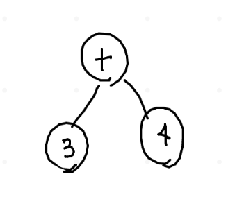
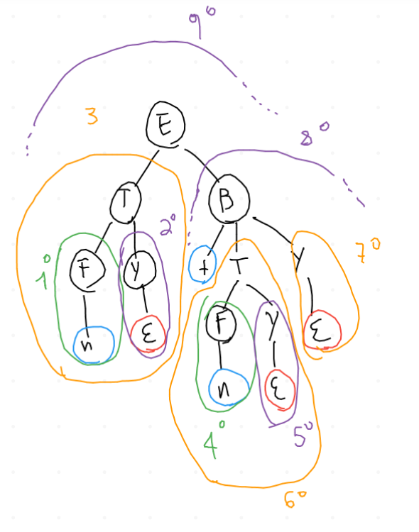
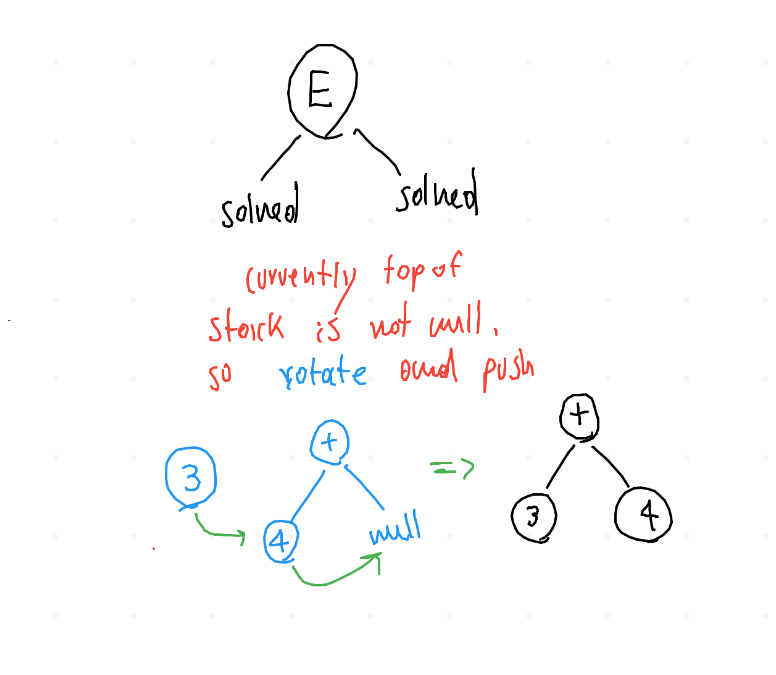

Abstract Syntax Tree construction, 17/11/22
Info
La lezione tratta un'esempio di esecuzione del parser predittivo(ricorsivo) con costruzione dell'AST. E' molto utile per capire a grandi linee il funzionamento del codice.
1 Introduzione
L'abstract Syntax Tree è l'albero che descrive la struttura sintattica di un programma, o di una sequenza di token di input.
A differenza del parse tree, l'AST non contiene caratteri non terminali intermedi, o altri caratteri terminali come le parentesi. Lo scopo dell'AST è descrivere il "significato" del codice tramite la sua stessa struttura.
2 Esempio
Ad esempio, considerando la solita grammatica di riferimento, il parse tree per la semplice l'espressione
\begin{equation} 4+3 \end{equation}sarebbe il seguente \(\Downarrow\) mentre l'AST sarebbe più semplicemente questo \(\Downarrow\)

3 L'algoritmo
Vediamo ora come il codice costruisce l'AST partendo dal basso. Si tenga sempre sott'occhio anche il parse tree.
L'idea generale è quella di costruire l'AST facendo uso di uno stack di puntatori
ai nodi dell'albero. Man mano, i puntatori all'interno dello stack verranno estratti
2 alla volta per costruire i vari sottoalberi dell'AST. In base al contenuto dello
stack in ogni momento, l'aggregazione dei nodi verrà fatta in modo diverso.
Tenere sempre a mente che l'ordine delle chiamate ricorsive sui nodi è il seguente: \(\Downarrow\)

La prima chiamata ricorsiva che si risolve è la N.1: dato che la parte destra della produzione contiene soltanto un terminale e questo ha valore lessicale, viene invocata la funzione che costruisce la foglia e viene inserito nello stack un puntatore ad essa.
La seconda chiamata che si risolve inserisce nello stack un puntatore nullo.
Ora il control flow "torna alla T", che ha risolto i suoi due sottoalberi senza incontrare incongruenze con l'input. Ora il controllo è passato alla funzione che deve creare il sottoalbero (ASTBuild nel file ASTclasslessexpr3.cpp). Lei capisce che è stata chiamata su un nodo interno, quindi su un carattere non terminale. Dato che trova un puntatore nullo sulla cima, semplicemente re-inserisce nello stack l'elemento non nullo. Questa semplificazione permette di eliminare degli elementi "garbage" dall'albero.
Il codice che descrive questa parte è il seguente:
else { ExprAST *RHS = AStree.top(); AStree.pop(); ExprAST *LHS = AStree.top(); AStree.pop(); if (RHS==nullptr) return LHS; return rotate(LHS,RHS); }
La quarta e la quinta chiamata inseriscono semplicemente nello stack il token "4" e un puntatore nullo. Il controllo torna alla sesta chiamata, che esegue esattamente i passi svolti nella terza chiamata.
La settima chiamata aggiunge un puntatore nullo. L'ottava chiamata è particolare: la funzione ASTbuild trova un token all'inizio della produzione, quindi entra in questo switch case ed effettua l'aggregazione dei due elementi che trova nello stack (4 e nullpointer).
ExprAST *ASTBuild(std::vector<int> &prod, int inner) { if (inner) { int tok = prod.at(0); if (isterm(tok)) { switch(tok) { case '+': case '*': { auto *RHS = AStree.top(); AStree.pop(); auto *LHS = AStree.top(); AStree.pop(); ExprAST *E = new BinaryExprAST(tok,LHS,RHS); return E; }
Nell'ultima chiamata il controllo torna ad E, che ha risolto i due sottoalberi senza incontrare problemi. La produzione che viene applicata ad E ha un carattere non terminale all'inizio, quindi la funzione che crea l'albero finisce di nuovo in questa parte di codice:
else { ExprAST *RHS = AStree.top(); AStree.pop(); ExprAST *LHS = AStree.top(); AStree.pop(); if (RHS==nullptr) return LHS; return rotate(LHS,RHS); }
questa volta però in cima allo stack non c'è un puntatore nullo, quindi viene applicata la funzione rotate e viene ritornato il puntatore all'albero risultante. Infatti alla fine della costruzione dell'albero avremo sempre in basso a destra un puntatore nullo. Per correggere questo problema e dare la giusta forma all'AST, si fanno shiftare verso sud-est (basso a sinistra) tutti i nodi per fare spazio ed eliminare il puntatore nullo!
ExprAST *rotate(ExprAST *First, ExprAST *Rest) { printstack(); ExprAST *top = Rest; while (Rest->right() != nullptr) { ExprAST *tmp = Rest->left(); Rest->setval(First,Rest->right()); First = tmp;; Rest = Rest->right(); } Rest->setval(First,Rest->left()); return top; }
